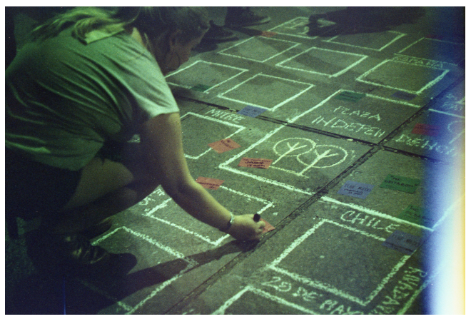

Mapping the Sexist Violence
A live, participatory mapping action during the 8M march in Mendoza, making everyday experiences of gender-based violence in urban space visible.


Mapping the Sexist Violence made the everyday experiences of sexist violence in urban space visible through a collective, participatory mapping action. Implemented during the 8M (International Women's Day) march in Mendoza, Argentina, it created a public space for women to identify, share, and locate areas of the city where they had experienced different forms of gender-based violence.
The action took place in the city's central square during the march. A schematic map of Mendoza was drawn directly on the ground, inviting women to interact with a representation of the city in a simple, accessible way. Participants placed coloured paper markers on specific areas — each colour representing a different type of sexist violence — and were invited to write short testimonies if they wished to add context.
After the march, the information gathered through the physical exercise was systematised and translated into a digital map, preserving the collective input so it could be analysed and communicated beyond the event. The project worked both as a public awareness action and as a preliminary diagnostic tool for identifying critical areas of the city where experiences of gender-based violence were concentrated.
- Participatory Mapping
- Gender
- Activism